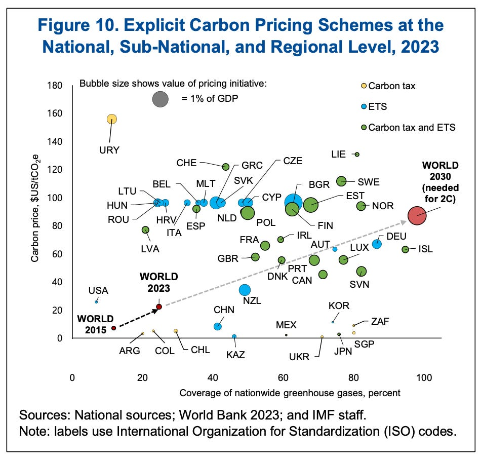

5 Carbon Pricing
Tooze
Carbon pricing continues to be adopted by countries, having doubled in emissions coverage since 2015 …. To date, 73 carbon taxes and emissions trading systems (ETSs) are in operation in 47 countries, covering 25 percent of global GHGs, up from 12 per cent in 2015. National coverage of emissions varies, from below 30 percent in some cases to more than 70 percent in others (for example, Canada, Germany, Korea, and Sweden). Carbon prices vary from below $5 to over $100 per ton (mostly in European countries). The average (emissions weighted) price of covered emissions has grown from $7 in 2015 to about $22 in 2023.

Pricing systems have an expansive logic. Given the significant carbon prices, the EU has no option but to adopt a Carbon Border Adjustment Mechanism (CBAM), to avoid its industries being undercut by unpriced imports. Despite intense pressure from the Biden administration, Brussels has not fallen in line with America’s non-WTO-conforming quick fixes. The WTO-conformity of Europe’s own system remains to be tested.
The critical decision lies with China. If Beijing reinforces its system of carbon pricing, then carbon pricing will be a common policy of the two blocs that are at this point most credibly committed to long-range decarbonization - the EU and China.
The best hope is that the large polluters accelerate their level of effort out of self-interest. At least if you believe the economic models, the balance of cost and benefit is hugely stacked in favor of action.
The question is not whether decarbonization is desirable or even whether it is technically feasible. The steps we need to take by 2030 clearly are within our reach. The central question is whether a coalition can be built to breakthrough the inertia of the existing system and powerful vested interests and not only to add new power but to aggressively run down polluting fossil fuel sectors. Those decisions have to be made within the small group of polluters responsible for the majority of global emissions (G7 plus China plus India). A coalition for a new energy model is emerging but that is not the same as a model for decarbonization which is a far more daunting political proposition.
Tooze (2023) Chartbook Carbon Notes 9 Slouching towards a 2 Degree-Plus World